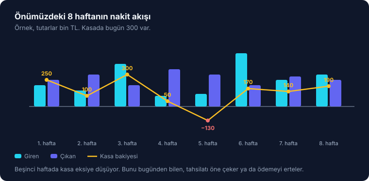
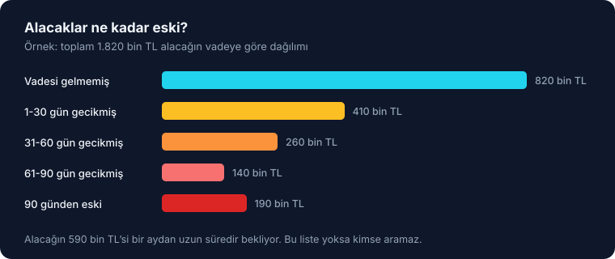

Finans ve ön muhasebe takibi için yazılım neden şart?
Birçok firma sahibi "muhasebemiz var" der ve kastettiği mali müşaviridir. Mali müşavir faturaları işler, beyannameleri verir, yasal defterleri tutar. Ama "bu hafta kime ne ödeyeceğiz, kimden ne alacağız, ay sonunu çıkarır mıyız" sorularının cevabı onda durmaz. Bu sorular firmanın kendi içinde, çoğu zaman patronun aklında ve bir Excel dosyasında cevap bekler.

İki ayrı muhasebe var
Birincisi devlete karşı tutulan resmi muhasebe. Geçmişe bakar, kuralları bellidir, mali müşavir yürütür. İkincisi firmanın kendini yönetmek için tuttuğu kayıt. Buna ön muhasebe ya da finans takibi deniyor. Bugüne ve önümüzdeki haftalara bakar.
İlki için herkes bir şekilde düzen kurmuş durumda, çünkü zorunlu. İkincisi çoğu firmada dağınık. Cari hesaplar bir Excel'de, çekler bir ajandada, banka hareketleri internet şubesinde, kredi taksitleri bir başka dosyadadır. Hepsini bir arada gören tek yer patronun zihnidir.
Kasada para var, peki ya üç hafta sonra?
Finans takibi dendiğinde çoğu firmada yapılan şey, sabah banka hesabına bakmaktır. Bakiyede para varsa işler yolunda sayılır. Bakiye bugünü gösterir. Haftaya vadesi gelecek çeki, ay ortasındaki maaşları, KDV ödemesini ve müşterinin geciken tahsilatını göstermez.

Kârlı firmaların da nakit sıkıntısına düşmesinin sebebi bu. Satış yapılmış, fatura kesilmiş, kâğıt üzerinde kazanılmıştır. Ama tahsilat altmış gün sonra, tedarikçi ödemesi otuz gün sonra ise aradaki boşluğu bir yerden kapatmak gerekir. Bunu beş hafta önceden gören firma bankayla sakin bir görüşme yapar. Son gün fark eden, bulabildiği en pahalı krediyi kullanır.
Tahsil edilmeyen alacak
Görüştüğümüz firmalarda en sık rastladığımız durum, kimin ne kadar borçlu olduğunun bilinmesi ama ne zamandır borçlu olduğunun bilinmemesi. Cari listede yirmi müşteri ve yanlarında tutarlar yazar. Hangisinin vadesi geçmiş, hangisi üç aydır ödeme yapmamış, listeden anlaşılmaz.

Vadesi geçmiş alacak aranmadığında müşteri de acele etmez. Parayı ilk isteyene öder. Alacakların yaşını gösteren basit bir liste ve haftada bir yapılan düzenli aramalar, tahsilat süresini belirgin biçimde kısaltır.
Benzer bir kayıp faturalamada yaşanır. İş teslim edilmiştir ama fatura kesmek için birinin irsaliyeleri toplaması gerekir, o da ay sonuna kalır. Fatura geç kesildiği için vade geç başlar, para geç gelir.
Finans yazılımı neyi bir araya getiriyor?
Yukarıdaki parçaları tek kayıtta topluyor. Satış faturası kesildiğinde müşterinin cari hesabına ve vade takvimine kendiliğinden işlenir. Alış faturası girildiğinde ödeme listesine eklenir. Çekler, senetler, kredi taksitleri ve maaşlar da aynı takvimde durur.
Bu kayıtlar bir arada olduğunda önümüzdeki haftaların nakit tablosu kendiliğinden çıkar. Kimseye "bu ay ne ödeyeceğiz" diye sormanız gerekmez.
Faturalama satışa bağlanır. Teslim edilen sipariş tek tuşla faturaya döner, e-fatura olarak gönderilir. İş bitti ama faturası kesilmedi durumu ekranda ayrı bir liste olarak görünür.
Banka hareketleri sisteme aktarılır ve kayıtlarla eşleştirilir. Hangi tahsilatın hangi faturaya ait olduğu, eşleşmeyen hareketlerin ne olduğu görülür.
Giderler de sınıflanır. Hangi departman, hangi proje, hangi araç ne kadar harcıyor, ay sonunda birkaç tıkla çıkar. Buradan sonrası proje kârlılığını ölçme konusuna bağlanıyor.
Mali müşavirle iş nasıl bölüşülür?
Firma içinde düzgün tutulan kayıt mali müşavirin işini de kolaylaştırıyor. Ay sonunda bir poşet fatura göndermek yerine, sınıflanmış ve eşleştirilmiş kayıtları aktarırsınız. Ondan gelen tabloyu kendi kaydınızla karşılaştırabilirsiniz.
Çoğu firmada mali müşavirin kullandığı programı değiştirmek gerekmez. Firma içindeki sistem veriyi onun programına uygun biçimde dışarı verir. Resmi muhasebeyi tamamen içeri almak isteyen firmalar da var, ama bu ayrı bir karar ve ilk adım olması şart değil.
Ne zaman gerekli olur?
- Ayda kesilen ve gelen fatura sayısı yüzü geçtiyse.
- Vadeli satış ve vadeli alış yapıyorsanız.
- Çek, senet ya da kredi taksiti takvimi tek kişinin ajandasındaysa.
- Kimin kaç gündür borçlu olduğunu öğrenmek yarım saatinizi alıyorsa.
- Önümüzdeki ayın nakit durumunu rakamla söyleyemiyorsanız.
Nereden başlanır?
En çabuk sonuç veren iki konu cari hesap ve vade takibi. Müşteri ve tedarikçi bakiyelerini, açık faturaları ve vadelerini sisteme alın. Bu kadarı bile alacak listesini ve önümüzdeki haftaların ödemelerini görmenizi sağlar.
İkinci adım faturalamayı satışa bağlamak, üçüncüsü banka eşleştirmesi. Gider sınıflaması ve bütçe en sona kalabilir.
Araç tarafında yalnızca ön muhasebe yapan programlar, satış ve stokla birlikte çalışan ERP sistemleri ve bunların arasında duran çözümler var. Satış, stok ve satın alma başka bir sistemde tutuluyorsa, finansın onlarla konuşması gerekir. Aksi halde her fatura iki kez girilir. Biz seçim yaparken önce bu bağlantıya bakıyoruz.
Sık sorulan sorular
Mali müşavirimiz varken ayrıca buna gerek var mı?
İkisi farklı işler. Mali müşavir geçmiş dönemin yasal kaydını tutar. Finans takibi ise bugünkü alacak, borç ve nakit durumunu gösterir ve firmanın günlük kararları için gereklidir.
Ön muhasebe programı kullanıyoruz, yeterli değil mi?
Cari ve fatura takibi için yeterli olabilir. Eksik kaldığı yer genellikle satış, stok ve projelerle bağlantı. Aynı bilgiyi iki sisteme giriyorsanız ya da nakit tablosunu hâlâ Excel'de hazırlıyorsanız bir üst adıma bakma zamanı gelmiştir.
Geçmiş kayıtları aktarmak gerekir mi?
Hepsini değil. Açık faturalar, güncel cari bakiyeler ve vadesi gelmemiş çek ve senetler yeter. Kapanmış eski kayıtlar eski yerinde kalabilir.
İlgili hizmetlerimiz: KOBİ için ERP çözümleri, dijital dönüşüm danışmanlığı.
Dosyalarla takip size yılda kaça mal oluyor?
Tekrar girişin, elle hazırlanan raporların ve dosya kaynaklı hataların yıllık maliyetini hesaplayın.
Hesaplayıcıyı açNakit tablonuzu birlikte çıkaralım
Önümüzdeki sekiz haftanın giriş ve çıkışlarını beraber görelim.
Projenizi Konuşalım